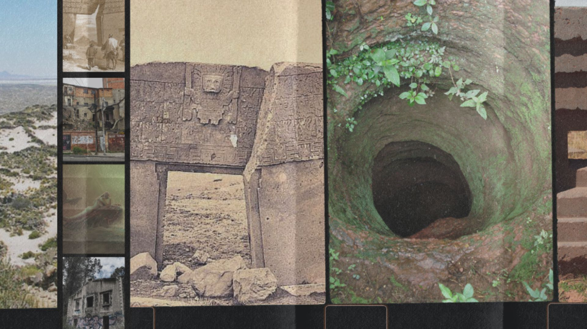
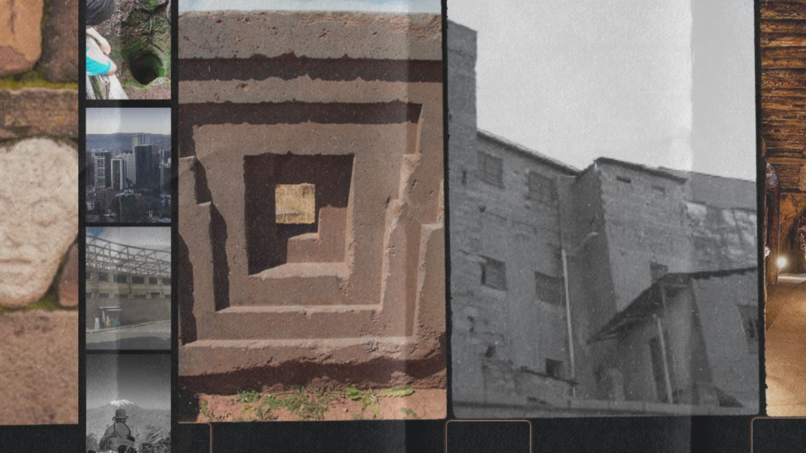

Bolivia es un país andino lleno de historia, folclore y creencias de todo tipo. Su cultura es fruto de la combinación de la de los pueblos prehispánicos con las creencias católicas de los españoles que conquistaron la región allá por el siglo XVI.
El de Estado Plurinacional de Bolivia. No hay una única realidad nacional en el país andino, sino que cada persona de cada cultura tiene su propia visión de cuál es su país.
Vayamos donde vayamos, cada rincón de Bolivia nos contará historias diferentes.

